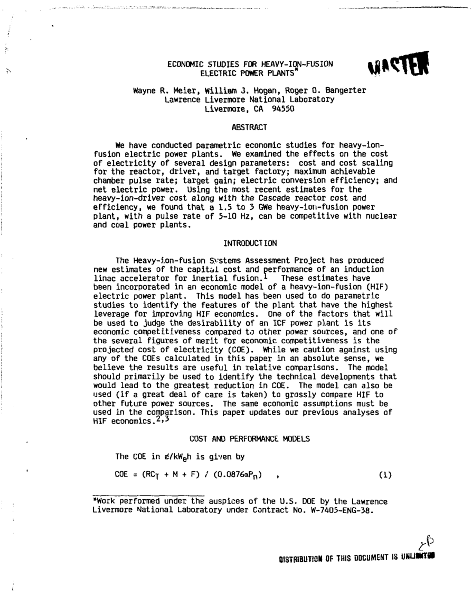
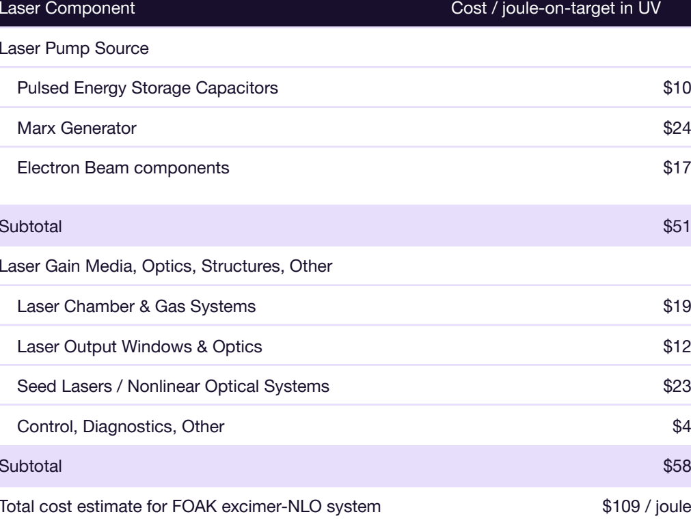
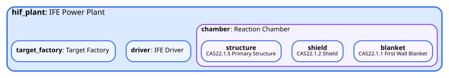
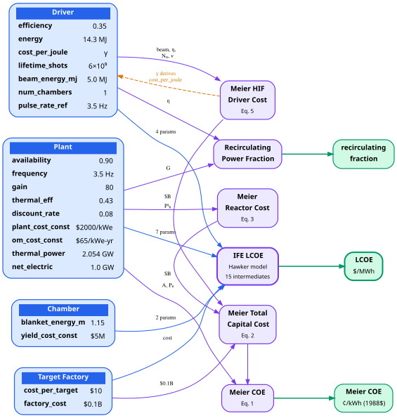

1. The Question
Fusion power has 36+ competing approaches at various stages of maturity. How do you compare their economics?
Decision-makers — investors, policymakers, researchers — need structured comparisons, not just headline LCOE numbers. But comparing fusion economics across fundamentally different approaches is hard: different confinement mechanisms, different cost structures, different data quality, different estimation maturity.
This project builds the analytical infrastructure for that comparison: a taxonomy of the concept space, reusable cost modeling patterns, and traceable parameter chains from source literature to model outputs. The models are built in SysML v2 using agent-assisted tooling.
Research Questions
These five questions drive all downstream work — taxonomy, source selection, modeling targets, and comparison methodology.
Rationale
CAS22 (reactor plant equipment) is ~60% of cost for magnetic confinement tokamaks, but inertial, magnetized target, and exotic approaches have fundamentally different power core structures, drivers, and balance-of-plant requirements. Understanding where the money goes for each approach is the foundation of any meaningful comparison.
Rationale
Published LCOE figures vary enormously (30–200+ $/MWh) and depend critically on assumptions about plant availability, magnet or driver cost, neutron economy, rep rate, and thermal conversion efficiency. We need to decompose LCOE into its constituent assumptions — not cite headline numbers.
Rationale
This directly informs modeling architecture. Shared structures (e.g., thermal power conversion, buildings, site work) become reusable library components. Divergent structures (e.g., magnet systems vs. laser drivers vs. pulsed power) become concept-specific designs. The answer determines how much modeling reuse is achievable.
Rationale
An ARIES tokamak study with AACE Class 3–4 estimates is fundamentally different from a startup whitepaper with Class 5 estimates. Understanding estimation maturity for each concept frames how much confidence to place in any comparison and where the biggest knowledge gaps lie.
Rationale
A parameter that moves LCOE by 2x if wrong AND is poorly constrained by available data is more important than one that's well-known or low-impact. This is the “where should attention focus” question — identifying the highest-leverage unknowns across the fusion landscape.
Comparison Axes
Every concept model must produce outputs along these dimensions to enable apples-to-apples comparison.
| Axis | What It Measures | Why It Matters |
|---|---|---|
| LCOE ($/MWh) | Total lifecycle cost per unit energy | The bottom line — comparison with other energy sources |
| Capital cost by CAS | Where the money goes (CAS20 breakdown) | Identifies dominant cost drivers per concept |
| Capacity factor | Plant availability × thermal efficiency | Huge LCOE sensitivity; varies between pulsed and steady-state |
| Fuel cycle economics | Tritium breeding, fuel cost, availability | D-T needs blankets; aneutronic faces other challenges |
| Technology readiness | Maturity of key subsystems | Distinguishes “ready to build” from “needs breakthroughs” |
| Estimation confidence | AACE class of the cost estimate | Frames how seriously to take the numbers |
| Sensitivity-risk profile | High-sensitivity AND high-uncertainty parameters | Where better data would most change the picture |
Scope
In Scope
- Magnetic confinement (tokamaks, stellarators, mirrors)
- Inertial confinement (laser, heavy-ion)
- Magnetized target fusion
- Exotic concepts
- ~36+ concepts in taxonomy, ~13 for deeper modeling
Out of Scope
- Non-electric fusion applications
- Fission-fusion hybrids
- Concepts with zero public technical data
- Detailed engineering design (we model economics)
2. The Scaffold
What structure enables all downstream work?
Bootstrap
A single command installs the full agent-assisted MBSE workflow into a project:
Initializing agentic-mbse project (dev mode)...
Symlinked 14 commands, 5 agents, 10 skills, 1 hook, 4 tool-owned docs
Created 2 user-owned files (templates)
Preserved 12 existing user files
34 symlinks installed.
This gives Claude Code access to the full MBSE command set — research, spec, design, plan, implement, validate, and status tracking — plus skills for SysML conventions, requirements tracking, and model validation. User-owned files are never overwritten; tool-owned files auto-update when the toolchain updates.
Project Structure
knowledge/ Domain sources and research
models/ SysML v2 models
modeling_project/ Investigation governance
work/ Modeling work tracking
.project/ (not shown) tracks internal development work — scripts, infrastructure, project setup — using a general-purpose PM. It’s for tooling developers, not project users. work/ tracks the investigation’s modeling work — SysML models, taxonomy, domain research — using the MBSE-specific PM. They share a lifecycle pattern but manage separate state.
Fusion TEA Initialization
Three governance documents are created at project setup. They define what we're investigating, what rules our models follow, and what structural decisions have been made.
OVERVIEW.md — Investigation Scope
The primary strategy document. Defines what we're investigating, why it matters, and how we'll proceed.
Contains: 5 research questions, 7 comparison axes, scope boundaries, “done” criteria, source strategy (L1–L5 data layers), and the two-stage investigation process (Taxonomy → Concept Modeling).
This document drives all downstream work. If a modeling decision can't trace back to something in OVERVIEW.md, it's unanchored.
REQUIREMENTS.md — Modeling Rules
Six modeling requirements (MR-1 through MR-6) that all SysML models must follow, plus five process requirements (PR-1 through PR-5) that define how the investigation progresses.
| ID | Rule | Why |
|---|---|---|
| MR-1 | CAS hierarchy as primary cost decomposition | Standard structure enabling cross-concept comparison |
| MR-2 | Standard costed component interface | Uniform interface for cost rollup and comparison |
| MR-3 | Library concept-agnostic, designs concept-specific | Maximizes reuse (~60% shared definitions) |
| MR-4 | Traceable citations on all quantitative values | Machine-checkable provenance; anti-hallucination |
| MR-5 | Standard output schema for comparison | Enables apples-to-apples reporting (intent, TBD) |
| MR-6 | Patterns defined before production models | Validates structure before scaling |
ARCHITECTURE.md — Structural Decisions
Intentionally empty at initialization. Architectural decisions (AD-XXX) emerge from taxonomy work, concept analysis, and modeling pattern development. Populating this upfront would be speculative.
Decisions are registered here as they're made, with rationale and traceability to the research that motivated them.
3. The Workflow
How does work flow through the system, and where do artifacts land?
- Ingest domain literature (PDFs, design studies)
- Extract structured text with quality metrics
- Synthesize domain insights (DI-XXX)
- Identify gaps → seek new sources
- Classify ~36+ concepts along meaningful dimensions
- Identify shared vs. divergent cost structures
- Build comparison framework
- Select ~13 concepts for Stage 2
Exit criteria: A formalized framework that organizes the fusion concept space and identifies what’s shared vs. divergent across approaches.
- Concept-specific literature
- Fill L3–L5 data layers
- Identify parameter gaps
- Define work items
- Spec → Design → Plan
- Record intent and decisions
- Build SysML v2 models
- Validate (6 levels)
- Verify traceability
Exit criteria: Per-concept — a validated SysML v2 model passing all validation levels. Cross-concept — comparison along the defined axes.
Traceability — The Cross-Cutting Concern
Every quantitative value in the system — from source documents through to model parameters — carries a structured citation chain. This is the mechanism that prevents hallucination and makes the analysis verifiable.
Each link is a file path that resolves within the repository. Citations use a standard format (Source / Ref / Basis) and scripts/trace_audit.py (planned) will walk these chains to report coverage gaps. Parameters without source data must be explicitly marked as assumed — silent invention is a rule violation (MR-4).
Visibility
A single command shows where everything stands:
## Project: fusion-tea
### Work Items
Standalone:
[ ] Foundation Package ........ backlog
[ ] Power Balance Calculations .. backlog
### Project Rules (REQUIREMENTS.md)
Total: 0 | With validation method: 0 | Machine-enforceable: 0
### Validation Status (VALIDATION_MATRIX.md)
Total: 0 | Passing: 0 | Failing: 0 | Pending: 0
This is the actual current output — sparse because modeling work hasn’t begun. As work items flow through the pipeline, the dashboard shows their stage (speccing, designing, implementing), validation status, and traceability coverage. State is derived from YAML frontmatter + filesystem scanning — no separate database.
5. Source Ingestion
Domain literature is ingested through a Zotero → extract → register pipeline, producing structured markdown that downstream research and modeling can cite directly.
Pipeline
The ingestion script searches our Zotero library by tag, downloads matching PDFs, extracts each to structured markdown, and registers the result in SOURCE_INDEX.md. A single command processes an entire batch:
Zotero library: 32 item(s), manifest: 6 already processed
After --tag 'demo-ife' filter: 5 item(s)
[1/5] Commercialization of laser fusion energy … done (172s)
[2/5] AMPS high-yield inertial fusion … done (94s)
[3/5] Accelerators for Inertial Fusion Energy Production … done (118s)
[4/5] Energy from Inertial Fusion … done (85s)
[5/5] Economic studies for heavy-ion-fusion electric power plants … done (85s)
Processed 5 of 5 items. Manifest now has 11 entries.
Corpus
For this demo, we searched Zotero for papers on inertial fusion energy (IFE) economics and identified 5 that provide a breadth of data across driver technologies and time periods:
| Source | Year | Focus | Key Data | |
|---|---|---|---|---|
| Meier — HIF Electric Power Plants | 1986 | Heavy-ion IFE | COE parametric studies, driver cost scaling, multi-unit plant economics | Preview |
| Hogan — Energy from Inertial Fusion | 1992 | IFE overview | Driver technologies (laser, heavy-ion, light-ion), target physics, plant designs | Preview |
| Bangerter — Accelerators for IFE | 2013 | IFE drivers | Accelerator technology options and costs for IFE energy production | |
| Alexander — AMPS High-Yield IFE | 2025 | Pulser IFE | High-gain physics basis, practical engineering, cost projections | |
| Galloway — Laser Fusion Commercialization | 2026 | Laser IFE | KrF excimer laser at <$100/J, FOAK cost breakdown, deployment roadmap |
Extractions
Each paper is converted to structured markdown that preserves headings, tables, equations, and figure references. Here’s what that looks like — a 1986 scanned paper alongside its extracted markdown:

Wayne R. Meier, William J. Hogan, Roger O. Bangerter
Lawrence Livermore National Laboratory, Livermore, CA 94550
## ABSTRACT
We have conducted parametric economic studies for heavy-ion-
fusion electric power plants. We examined the effects on the cost
of electricity of several design parameters: cost and cost scaling
for the reactor, driver, and target factory; maximum achievable
chamber pulse rate; target gain; electric conversion efficiency; and
net electric power. Using the most recent estimates for the
heavy-ion-driver cost along with the Cascade reactor cost and
efficiency, we found that a 1.5 to 3 GWe heavy-ion-fusion power
plant, with a pulse rate of 5-10 Hz, can be competitive with
nuclear and coal power plants.
## INTRODUCTION
The Heavy-ion-fusion Systems Assessment Project has produced
new estimates of the capital cost and performance of an induction
linac accelerator for inertial fusion. …
And a clean modern extraction — the Xcimer laser cost table extracted perfectly from PDF to structured data:

|---|---|
| Laser Pump Source | |
| Pulsed Energy Storage Capacitors | $10 |
| Marx Generator | $24 |
| Electron Beam components | $17 |
| Subtotal | $51 |
| Laser Gain Media, Optics, Other | |
| Laser Chamber & Gas Systems | $19 |
| Laser Output Windows & Optics | $12 |
| Seed Lasers / NLO Systems | $23 |
| Control, Diagnostics, Other | $4 |
| Subtotal | $58 |
| Total FOAK excimer-NLO | $109/J |
| DPSSL (aggressive est.) | $700–$1000/J |
Extraction quality varies with source age and format. Modern PDFs (2013+) extract cleanly. Older scanned documents (1986, 1992) produce usable text with some OCR artifacts — cosmetic noise on headers, occasional garbled characters — but the equations, cost data, and parametric relationships that matter for downstream research come through. Issues are documented honestly rather than hidden. See Appendix A for details.
Source Strategy
Rather than prescribing specific sources upfront, the project defines data layers needed at each depth level. Sources are selected to fill these layers as the investigation progresses.
| Layer | Data Need | Supports |
|---|---|---|
| L1: Conceptual Model | How does this approach work? Confinement mechanism, fuel cycle, energy conversion pathway, key subsystems | Stage 1 taxonomy |
| L2: Physics & Requirements | Plasma parameters, confinement performance, burn conditions, power requirements | Stage 1 enrichment |
| L3: Structural Composition | Physical systems needed — magnets/lasers/drivers, blanket/shield, power conversion, BOP | Stage 2 CAS structure |
| L4: Energy Balance | Power flows, thermal conversion efficiency, recirculating power, availability, duty cycle | Stage 2 performance model |
| L5: Costing | Capital costs by subsystem, O&M estimates, fuel costs, scaling relationships, basis of estimate | Stage 2 cost model |
6. Domain Research
Extracted sources are systematically researched against the investigation’s questions, producing structured domain insights (DI-XXX) that flow into modeling work. The /research command orchestrates this — an agent reads sources, synthesizes findings, and proposes insights for human approval.
The Research Session
We directed the agent to research IFE system economics for first-pass model structure, searching across all ingested sources. Here’s how that conversation unfolded:
/research I want to plan out the modeling of my IFE system. This research will be the basis for our first pass of the model structure. Search across all relevant sources.Design Concept — Synthesize the IFE concept into a logical process. Identify the key behavioral and structural components that drive the effectiveness of the system.…
Cost Background — What are the major cost categories? How do they map to CAS?…
LCOE — What LCOE values do these sources project? What are Hawker’s 14 key parameters?…
The CAS framework is universal across MFE and IFE. Divergence concentrates in CAS22 sub-accounts: 22.1.3 (magnets → driver), 22.1.4 (heating → ignition), 22.1.8 (divertor → target factory).…
Top 6 LCOE sensitivities (Hawker Monte Carlo): discount rate (+0.247), plant cost (+0.210), target cost (+0.186), gain (−0.164), driver lifetime (−0.134), availability (−0.127).
- DI-A: IFE Fusion Cycle Gain Viability Threshold (η·G > 10)
- DI-B: CAS22 is the IFE-MFE Divergence Point
- DI-C: IFE Target Cost is a Unique Operating Cost Category
- DI-D: IFE Driver Cost Reference Points
- DI-E: Hawker 14-Parameter IFE LCOE Model
The research document is now at
knowledge/research/approved/.
8 sources were read in parallel. The agent synthesized findings into a structured report, proposed insight candidates, and — on approval — ran agentic-mbse pm approve-research to move the report from pending/ to approved/ and register DI-XXX entries in KNOWLEDGE.md. The human reviews each element separately: the report itself, then each insight candidate.
The Research Report
The approved research document lives at knowledge/research/approved/20260302-165055_ife-system-modeling-first-pass.md. Here’s how it’s structured — YAML frontmatter for machine-readable metadata, then sections with source citations throughout:
date: 2026-03-02
researcher: Claude (agentic)
topic: ife-system-modeling-first-pass
tags: [IFE, cost-modeling, LCOE, CAS, driver-comparison, system-architecture]
research_type: domain
---
# IFE System Modeling: Design Concept, Cost Structure, and LCOE Analysis
Sections
## Research Question
## Summary ← 5 bullet points answering the research question
## Detailed Findings
### 1. IFE Design Concept — Logical Process ← 8-step process chain
### 2. Structural Components ← 9 subsystems identified
### 3. Behavioral Components — Fusion Cycle Gain
### 4. Hierarchical Breakdowns ← by driver, target, chamber type
### 5. Cost Categories and CAS Mapping
### 6. LCOE Analysis ← Hawker’s 14 parameters with sensitivity rankings
### 7. PyFECONS Implementation Architecture
## Modeling / Architecture Insights
## Open Questions
## Source References
Every claim in the report cites its source with a tag like [Hawker-2020] or [EIF-1992], resolved at the bottom to specific file paths:
[EIF-1992]: Hogan, Bangerter, Kulcinski, “Energy from Inertial Fusion,” Physics Today, 1992.
File: knowledge/sources/energy_from_inertial_fusion/output.md
[Hawker-2020]: Hawker, “A simplified economic model for inertial fusion,” Phil. Trans. R. Soc. A, 2020.
File: knowledge/sources/a_simplified_economic_model_for_inertial_fusion/output.md
[HIF-1986]: Meier, Hogan, Bangerter, “Economic studies for HIF electric power plants,” 1986.
File: knowledge/sources/economic_studies_for_heavy_ion_fusion_electric_power_plants/output.md
[AMPS-2025]: Pacific Fusion, “AMPS High-Yield Inertial Fusion,” arXiv, 2025.
File: knowledge/sources/affordable_manageable_practical_and_scalable_amps_high/output.md
… + 5 more sources (Xcimer-2026, Accel-2013, ARPA-E-2020, ARIES-2013, PyFECONS)
Registered Domain Insights
The research produced 5 domain insights — structured facts approved through the curation gate and registered in knowledge/KNOWLEDGE.md. These are the durable knowledge artifacts that downstream modeling work cites:
DI-003 through DI-005 (3 more insights)
DI-003: IFE Target Cost is a Unique Operating Cost Category — IFE has a per-shot consumable cost ($0.19–100/target) with no MFE parallel. Hawker shows target cost has stronger LCOE correlation (+0.186) than driver cost (+0.075), with a threshold at ~$10/target.
DI-004: IFE Driver Cost Reference Points — Driver cost spans 3 orders of magnitude: NIF $9.5/J, DPSSL $700–1000/J, Xcimer KrF $60–120/J, pulsed-power $1.7–6/J. Ranges must be set per-driver-type, not as a universal range.
DI-005: Hawker 14-Parameter IFE LCOE Model — 14 technology-agnostic parameters characterize IFE LCOE. Top sensitivities: discount rate (+0.247), plant cost (+0.210), target cost (+0.186), gain (−0.164). The frequency–yield trade-off is the most important interaction effect.
What Emerged: Modeling Target
The research revealed that no single IFE driver type has sufficient CAS-level data for a bottom-up model on its own. But Hawker’s 14-parameter framework provides a complete, technology-agnostic model that can be populated immediately — and then instantiated with driver-specific parameters.
This decision is captured as a durable intent document at modeling_project/intent/IFE Modeling Target Selection.md, bridging the research findings to the modeling epic that follows.
The Knowledge Transformation
Here’s what happened in this stage:
The pipeline: unstructured PDFs (Section 5) became structured extractions, which were researched against specific questions to produce a report with 7 detailed sections. From that report, 5 structured domain insights were extracted through human review. Those insights — plus the data gaps they revealed — drove the modeling target decision. Each step narrows and structures: 8 sources → 1 report → 5 insights → 1 decision.
7. Concept Modeling
Domain research (Section 6) produced a modeling target decision. This section follows the Stage 2 pipeline from Section 3 — Planning (turning that decision into tracked work items) and Execution (running each work item through the spec → design → plan → implement cycle).
Planning
Section 6 ended with a decision: build a generic IFE cost model using Hawker’s 14-parameter framework, then instantiate with Heavy Ion Beam parameters. That decision lives in an intent document (modeling_project/intent/IFE Modeling Target Selection.md). The first step is turning it into tracked work.
The /backlog add command reads the intent document, assesses the scale of work (this is an epic — multiple items with dependencies), decomposes it into individually deliverable work items, and registers everything through the CLI:
/backlog add modeling_project/intent/IFE Modeling Target Selection.md
Epic file:
work/backlog/epic-ife-cost-modeling.md| ID | Item | Depends On |
|---|---|---|
| WI-006 | IFE Cost Structure Library | None |
| WI-007 | Generic IFE Concept Model | WI-006 |
| WI-008 | HIF Concept Instantiation | WI-007 |
The epic file has full context: authority source dependencies, success criteria, per-item scope and requirements, sequencing rationale, and risks.
Next step:
/spec-model on WI-006 (IFE Cost Structure Library) to begin the first item.
The agent read the intent document, identified three work items with a strictly sequential dependency chain (library → generic model → HIF instantiation), created an epic file with full context, and registered each item via agentic-mbse pm add-item. The YAML frontmatter in work/BACKLOG.md is the machine-readable source of truth; the rendered markdown table is derived from it.
With the epic registered, the dashboard shows the planned work — three items in the backlog, zero validations, nothing started yet:
## Project: fusion-tea
### Work Items
Epic: IFE Cost Modeling [0/3 done]
[ ] IFE Cost Structure Library .. backlog
[ ] Generic IFE Concept Model .. backlog
[ ] HIF Concept Instantiation .. backlog
### Project Rules (REQUIREMENTS.md)
Total: 0 | With validation method: 0 | Machine-enforceable: 0
### Validation Status (VALIDATION_MATRIX.md)
Total: 0 | Passing: 0 | Failing: 0 | Pending: 0
Execution
Each work item runs through the same cycle: /spec-model → /design-model → /plan-model → /implement-model. At each stage, the agent produces a durable artifact that the next stage builds on — and the dashboard tracks progress throughout.
Three work items were executed in sequence. WI-006 (library patterns) gets the deepest showcase below — it’s the “from scratch” case. WI-007 and WI-008 follow the same cycle with progressively more reuse.
What a Spec Looks Like
The /spec-model command produces a requirements specification — what to build, traced to domain insights. Here’s the WI-006 spec, showing YAML frontmatter (machine-readable state) and the modeling requirements it derives:
Status: completed
Scale: standard
Epic: IFE Cost Modeling
Owner: reid
Created: 2026-03-02
---
# Modeling Specification: IFE Cost Structure Library (WI-006)
Reusable, driver-agnostic library definitions for IFE economic modeling.
All downstream work items (WI-007, WI-008) import from these definitions.
| Requirement | Derives From | Summary |
|---|---|---|
MR-WI006-1 | DI-005, RQ-5 | Hawker’s 14 parameters as typed attributes with metadata (min, max, sensitivity) |
MR-WI006-2 | DI-002, MR-1 | CAS account hierarchy with IFE-specific classification |
MR-WI006-3 | DI-005, RQ-2 | LCOE calculation framework (closed-form DCF) |
MR-WI006-4 | DI-001, RQ-1 | Fusion cycle gain constraint (η·G ≥ 10) |
MR-WI006-5 | MR-2 | Costed component interface (standard capital_cost attribute) |
MR-WI006-6 | MR-4, PR-5 | Traceable citations on all quantitative values |
MR-WI006-7 | MR-3 | All definitions concept-agnostic (no driver-specific values) |
Every spec requirement traces backward to either a domain insight (DI-XXX from Section 6) or a project modeling requirement (MR-X from REQUIREMENTS.md). This is what makes the pipeline verifiable: you can audit any model parameter back through spec → insight → source document → page number.
What a Design Looks Like
The /design-model command takes the spec and produces an architecture — which SysML elements to create, how they relate, and why. Here’s what the WI-006 design decided:
| Decision | Choice | Rationale |
|---|---|---|
| Numeric types | Plain Real | Custom monetary ISQ types are complex and untested with syside parser |
| Parameter metadata | attribute def ‘Economic Parameter’ | Machine-readable; supports future Monte Carlo via codegen |
| LCOE formula | Closed-form DCF | SysML v2 calc def doesn’t support looping; mathematically equivalent for constant streams |
| CAS hierarchy | Part def specializations of ‘Costed Component’ | Type-safe; each account carries a queryable scope classification enum |
| File organization | 3 subdirectories: foundation/, cost_structure/, analyses/ | Follows MODELING_GUIDE.md pattern; separates concerns |
| Param vs. calc separation | Parameters and LCOE calc in separate files | Calc is pure math — can be reused with any parameter source |
The design also includes a full prototyping phase — the agent writes SysML, runs it through the parser, fixes issues, and iterates until all files pass validation. By the time design is “complete,” the SysML already works:
models/library/
foundation/
economic_parameter.sysml # attribute def + CAS Scope enum
costed_component.sysml # abstract part def (standard interface)
cost_structure/
cas_hierarchy.sysml # 9 CAS level 2 part defs
ife_cost_parameters.sysml # 14 Hawker parameters with metadata
analyses/
ife_lcoe.sysml # closed-form DCF calc def
fusion_cycle.sysml # recirculating power + viability constraint
What a Plan Looks Like
The /plan-model command takes the design and produces a phased execution plan with validation checkpoints. Since the design already includes a validated prototype, the plan focuses on refinement and integration:
- MR-4 citation audit across all 6 files (14 checks)
- MR-WI006-7 concept-agnosticism verification (4 checks)
- Naming consistency check
- syside parse validation — PASSED
- Register architectural decisions (AD-001 through AD-006)
- Update validation matrix (SV-001 through SV-005)
- Verify all 8 spec acceptance criteria
- Close work item via
agentic-mbse pm close-item WI-006
Each plan phase has concrete checkboxes that get marked off during /implement-model. The plan is a durable artifact — if implementation spans multiple sessions, the next session reads the plan and resumes where the checkboxes stop.
The SysML Models
Here’s what the actual model code looks like. This excerpt from ife_cost_parameters.sysml shows how each of Hawker’s 14 parameters carries metadata and traceable citations:
doc /* The 14 technology-agnostic parameters that characterize IFE LCOE.
**Source**: knowledge/sources/a_simplified_economic_model.../output.md
**Ref**: Table 1 (parameter definitions), Figure 3 (sensitivity)
**Basis**: Complete parameter set from Hawker 2020 Monte Carlo analysis */
attribute discount_rate : 'Economic Parameter' {
doc /* Highest sensitivity parameter (+0.247).
Source: Hawker 2020 Table 1, parameter d. */
:>> value = 0.08;
:>> min_value = 0.02;
:>> max_value = 0.12;
:>> sensitivity = 0.247;
}
attribute driver_cost_constant : 'Economic Parameter' {
doc /* Driver capital cost per joule of bank energy.
Reference points: NIF $9.5/J, DPSSL $700-1000/J,
Xcimer $60-120/J, pulsed-power $1.7-6/J.
Source: Hawker 2020 Table 1, parameter gamma.
Basis: DI-004 driver cost reference points. */
:>> value = 5.0;
:>> min_value = 2.0;
:>> max_value = 10.0;
:>> sensitivity = 0.075;
}
// ... 12 more parameters with same structure
}
And here’s how a concrete concept model specializes the library. The HIF driver derives its cost from Meier’s engineering formula, which then feeds automatically into the inherited Hawker LCOE calculation:
doc /* Heavy Ion Fusion driver: induction linear accelerator.
**Source**: knowledge/sources/energy_from_inertial_fusion/output.md
**Ref**: Osiris column in power plant operating parameters table
**Basis**: Osiris HIF plant design (1.0 GWe, liquid-wall chamber) */
// Meier driver cost computation — engineering formula becomes gamma
calc meier_cost : 'Meier HIF Driver Cost' {
in beam_energy_mj = beam_energy_mj;
in driver_efficiency = efficiency;
in num_chambers = num_chambers;
in rep_rate = pulse_rate_ref;
}
// Inherited interface — HIF-specific values
:>> efficiency = 0.35; // 20-30% range, Osiris baseline
:>> cost_per_joule = meier_cost.gamma; // derived from engineering formula
:>> energy = 14.286e6; // bank energy: 5 MJ beam / 0.35 eta
:>> lifetime_shots = 6.0e9; // 30 yr * 3.5 Hz * capacity factor
}
The key pattern: :>> cost_per_joule = meier_cost.gamma — the HIF driver’s cost is dynamically derived from Meier’s engineering formula (beam energy, efficiency, chamber count, rep rate), then automatically flows into the inherited Hawker LCOE calculation. One model element bridges two independent cost models from two different papers separated by 34 years.
Validation
Every SysML file is run through the parser. All 11 files across 3 work items pass:
Checked 11 files: 0 errors, 0 warnings
Beyond parsing, each work item registers validation checks in the project’s VALIDATION_MATRIX.md. These range from structural checks (“are all required subsystems present?”) to reasonableness checks (“is the LCOE within the expected range?”):
| ID | Check | Type | Result |
|---|---|---|---|
| SV-001 | All 14 Hawker parameters present with metadata | rollup | PASS |
| SV-003 | LCOE calc dimensional consistency | physical | PASS |
| SV-008 | LCOE with realistic params within Hawker range ($25–120/MWh) | reasonableness | PASS |
| SV-012 | Meier driver cost formula produces ~$1B | baseline | PASS |
| SV-014 | Meier COE at reference case ~ 5.0 cents/kWh | baseline | PASS |
Showing 5 of 15 total validations. The full matrix covers parse checks, structural completeness, dimensional consistency, parameter range reasonableness, and cross-validation against reference values from the source literature. All 15 pass.
Requirements Compliance
We defined 6 modeling requirements in REQUIREMENTS.md before any models were built. Did the pipeline follow its own rules?
| Requirement | What It Says | Evidence |
|---|---|---|
MR-1 |
CAS hierarchy as primary cost decomposition | 9 CAS level 2 part defs in cas_hierarchy.sysml; every subsystem maps to a CAS account |
MR-2 |
Standard costed component interface | Abstract ‘Costed Component’ part def with capital_cost; all CAS accounts specialize it |
MR-3 |
Library concept-agnostic, designs concept-specific | Library has zero driver-specific values; HIF params live only in models/designs/hif_ife/ |
MR-4 |
Traceable citations on all quantitative values | Every parameter carries Source/Ref/Basis doc comments; traceability matrix has 7 HIF rows |
MR-5 |
Standard output schema for comparison | Both Hawker LCOE and Meier COE computed for same plant; dual-output pattern established |
MR-6 |
Patterns defined before production models | WI-006 established all patterns (parameter metadata, CAS hierarchy, calc separation); WI-007/008 reuse them |
Dashboard: After Completion
Compare this to the “before” dashboard above. Three work items completed, 15 validations passing, zero failing:
## Project: fusion-tea
### Work Items
Epic: IFE Cost Modeling [3/3 done]
[x] ife-cost-structure-library .. completed 2026-03-02
[x] generic-ife-concept-model .. completed 2026-03-02
[x] hif-concept-instantiation .. completed 2026-03-03
### Project Rules (REQUIREMENTS.md)
Total: 0 | With validation method: 0 | Machine-enforceable: 0
### Validation Status (VALIDATION_MATRIX.md)
Total: 15 | Passing: 15 | Failing: 0 | Pending: 0
The dashboard is derived from YAML frontmatter and filesystem scanning — no manual state to maintain. Work item status, validation results, and completion dates are all tracked automatically. 6 architectural decisions (AD-001–006) were registered during modeling and now constrain future work.
The Knowledge Transformation
The full pipeline: domain insights and intent documents became a structured epic with 3 sequenced work items. Each work item produced spec → design → plan → SysML artifacts. The library (WI-006) established patterns, the generic model (WI-007) assembled them into a plant, and the HIF instantiation (WI-008) populated concrete values from source literature. Every quantitative value traces back to a specific page in a specific paper.
8. Visualization & Analysis
The models built through the workflow in Section 7 aren't just SysML files — they're machine-readable, introspectable artifacts. The extraction toolchain parses them via syside and produces structural views, while the calculation definitions encode the complete cost logic with traceable parameters. This section shows what the toolchain produces from the HIF/Osiris concept model.
Structural View
The extraction CLI walks the syside AST to build the containment hierarchy — which parts contain which sub-parts, with their type definitions. For the HIF plant, this shows the Osiris design decomposed into driver, target factory, and reaction chamber (with its CAS22 sub-accounts).

$ uv run python -m proof_of_concept.extraction models/ --format dot \
| dot -Tsvg -o demo/images/structural-view-hif.svg
uv run python -m proof_of_concept.web to launch the Cytoscape.js viewer — the same extraction engine powers an interactive diagram with expand/collapse, cost coloring, and PNG export.
Calculation Data Flow
The HIF plant model encodes two independent cost calculation chains, both expressed as SysML calc def elements with formally declared inputs and outputs. Every parameter traces to a source subsystem and a literature citation.

The Hawker chain (blue edges) implements a general IFE LCOE model with 14 input parameters and 15 intermediate computations. The Meier chain (purple edges) uses HIF-specific parametric cost formulas from 1986 for independent cross-validation. Both chains share plant-level operating parameters but produce independent cost outputs — LCOE in $/MWh vs. COE in ¢/kWh (1988$).
Osiris baseline parameters
| Parameter | Value | Source Subsystem | Citation |
|---|---|---|---|
driver.efficiency | 0.35 | HIF Driver | EIF-1992 Osiris |
driver.energy | 14.286 MJ (bank) | HIF Driver | 5.0 MJ beam / 0.35 η |
driver.cost_per_joule | γ (derived) | HIF Driver | Meier 1986 Eq. 5 |
driver.lifetime_shots | 6.0×10&sup9; | HIF Driver | 30 yr × 3.5 Hz × CF |
chamber.blanket_energy_m | 1.15 | Reaction Chamber | hif_plant.sysml |
chamber.yield_cost_const | $5×10&sup6; | Reaction Chamber | hif_plant.sysml |
plant.availability | 0.90 | Plant operations | Bangerter 2013 |
plant.frequency | 3.5 Hz | Plant operations | EIF-1992 Osiris |
plant.gain | 80 | Plant operations | EIF-1992 Osiris |
plant.thermal_efficiency | 0.43 | Plant operations | EIF-1992 Osiris |
plant.discount_rate | 0.08 | Plant financial | Hawker 2020 |
plant.plant_cost_constant | $2000/kWe | Plant financial | Meier 1986 (estimated) |
plant.om_cost_constant | $65/kWe-yr | Plant financial | Meier 1986 (estimated) |
target.cost_per_target | $10 | Target Factory | Hawker 2020 default |
Library vs. Design Architecture
The model is organized in three layers — each more concept-specific than the last. This separation is enforced by MR-3: library definitions must remain concept-agnostic so they can be reused across any fusion approach.
| Layer | Location | What It Defines | Concept-Specific? |
|---|---|---|---|
| Foundation | library/foundation/ | Economic Parameter, Costed Component | No — shared across all fusion |
| Cost Structure | library/cost_structure/ | CAS20–CAS90, IFE Cost Parameters | No — CAS is universal |
| Analyses | library/analyses/ | IFE LCOE, Recirculating Power, Meier costs | No — formulas are general |
| Generic IFE | designs/generic_ife/ | IFE Power Plant template, subsystem defs | IFE-specific, driver-agnostic |
| HIF Instance | designs/hif_ife/ | HIF Driver, Osiris plant values | HIF-specific, fully concrete |
The pattern in action — the abstract IFE Driver declares what every inertial fusion driver must have. The concrete HIF Driver fills in how with values from source literature:
Library: IFE Driver (abstract)
:> 'CAS22.1.3 Driver' {
// Interface only — no values
attribute efficiency : Real;
attribute cost_per_joule : Real;
attribute energy : Real;
attribute lifetime_shots : Real;
}
designs/generic_ife/ife_subsystems.sysml
Design: HIF Driver (concrete)
:> 'IFE Driver' {
// HIF-specific attributes
attribute beam_energy_mj : Real;
calc meier_cost : 'Meier HIF Driver Cost';
// Concrete values from Osiris
:>> efficiency = 0.35;
:>> cost_per_joule = meier_cost.gamma;
:>> energy = 14.286e6;
:>> lifetime_shots = 6.0e9;
}
designs/hif_ife/hif_driver.sysml
The abstract definition declares four interface attributes with no defaults — each driver type must provide its own values. The HIF driver adds beam-energy and Meier cost-formula attributes, then fills in the interface with Osiris reference values. A laser driver or pulsed-power driver would specialize the same interface with completely different values and cost models, but the LCOE calculation chain would work identically.
With one concept modeled (HIF/Osiris), the infrastructure is proven. Adding a second concept — laser IFE, pulsed-power, or magnetic fusion — means specializing the same generic template with different driver parameters and source literature. The comparison axes (LCOE, CAS breakdown, sensitivity profile) are already built into the model structure.
9. The Closed Loop
Everything so far ends in a model you can read. Can the model itself do the computing?
For four months there was only one way to get a number out of the SysML models in Section 7: a human re-typed the formulas into a Python script and ran that instead. On 2026-07-05 the loop closed — the models were mechanically converted to executable Python, run through the teax pipeline executor, checked against the verified answers, and swept across 11,505 design points to map where inertial fusion energy is economically viable. No step required a human to re-derive or re-type a formula.
The correctness gate came first: three design points had LCOE values verified against source literature, and the generated pipeline had to reproduce them within a relative tolerance of 10−6. It did better — all three matched bit-exactly, because live extraction carries the model’s compiled expression trees into the generated code, so every calculation body was emitted from the model’s own math rather than translated by hand.
| Anchor | Design point | Expected ($/MWh) | Executed ($/MWh) | Result |
|---|---|---|---|---|
| A | Hawker 14-parameter defaults | 252.2999631 | 252.2999631 | exact |
| B | Realistic HIF (f = 5 Hz, η = 0.25, G = 100) | 68.6902017 | 68.6902017 | exact |
| C | Osiris plant point (SV-013) | 270.1211779 | 270.1211779 | exact |
With the generated code proven at the anchors, the sweep varied driver efficiency η, target gain G, and shot rate f across 11,505 combinations in 0.1 s — and the map that came out shows real physics: the “fusion cycle gain” knee (ηG = 10) the sources describe, emerging from generated code rather than a textbook figure.

The η–G plane at f = 5 Hz. Below the dashed line the plant consumes more power than it makes; between the dashed and solid (ηG = 10) lines it is net-positive but recirculates so much power to its own driver that LCOE explodes past $1000/MWh. Past the knee, LCOE settles into a broad $50–80/MWh basin. The white star is anchor B — the checked point. 75.8% of the grid is viable; 64.5% also clears $100/MWh. Source: data/ife_sweep/.
What broke, and what we learned (nothing was free)
The chain did not run on the first try. Legal-SysML patterns broke the toolchain downstream of parsing, and each is now a recorded modeling rule or a filed toolchain gap:
| Break | Handling |
|---|---|
return-style calc outputs are invisible to code generation | Six conversions to out attribute in the canonical models; gap filed |
| Quoted SysML names leak into Python identifiers — generated package isn’t valid Python | Deterministic name sanitizer; gap filed |
| Cross-part references (the γ → LCOE edge) drop to unwired entry points | Harness closes the loop explicitly — labeled as glue, not generated wiring |
| The model’s viability constraint is silently dropped by the generator | ηG > 10 evaluated in analysis code, as planned; generator fix filed |
None of these traps is caught by static validation — they surface only when the pipeline executes. Every one has a file:line pointer in work/active/WI-015_ife-end-to-end-demo/findings.md.
modeling_project/HYPOTHESIS_DOSSIER.md.
Bit-exact anchors prove faithful translation of the model into code — not that the model is right about the world. That distinction, and every other limit, is stated in the dossier as prominently as the wins.
Appendix A: PDF Processing Details
Quality Gates
The extraction pipeline doesn’t blindly convert PDFs to markdown. Each page passes through a quality gate that compares base extraction against ensemble table detectors (GMFT, Img2Table). When the gate detects missed tables or structural issues, it routes the page to Claude for enhanced extraction.
Example from the Xcimer laser fusion paper (28 pages):
Page 0: claude_replace “GMFT found 1 table but pymupdf produced no pipe tables”
Page 1: keep
Page 2: keep
…
Page 17: claude_replace “GMFT found 1 table but pymupdf produced no pipe tables”
Page 19: claude_replace “GMFT found 1 table but pymupdf produced no pipe tables”
…
Page 24: claude_replace “GMFT found 1 table but pymupdf produced no pipe tables”
Page 25–27: keep
# Result: 24 pages kept as-is, 4 pages enhanced by Claude
Only 4 of 28 pages needed Claude enhancement — all triggered by tables that the base extractor missed but GMFT detected. This selective approach keeps costs down while ensuring critical data (like the FOAK laser cost breakdown at $109/J) is captured correctly.
Per-Paper Extraction Quality
| Paper | Year | Quality | Notes |
|---|---|---|---|
| Xcimer Laser Fusion | 2026 | Excellent | Clean tables, proper headings, no artifacts |
| AMPS High-Yield IFE | 2025 | Excellent | Extracted from arxiv HTML; all structure preserved |
| Accelerators for IFE | 2013 | Good | 145 KB extraction; tables and references intact |
| Energy from Inertial Fusion | 1992 | Acceptable | Shorter extraction; review article format |
| HIF Electric Power Plants | 1986 | Acceptable | OCR noise on headers; equations and cost tables readable but some uncertain values |